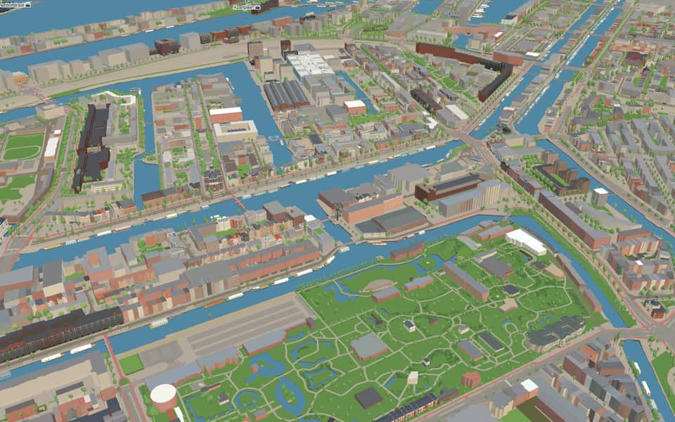
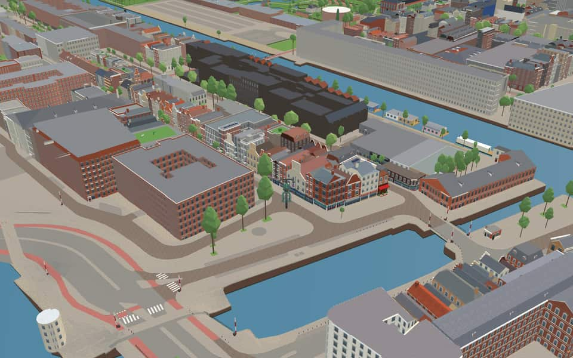
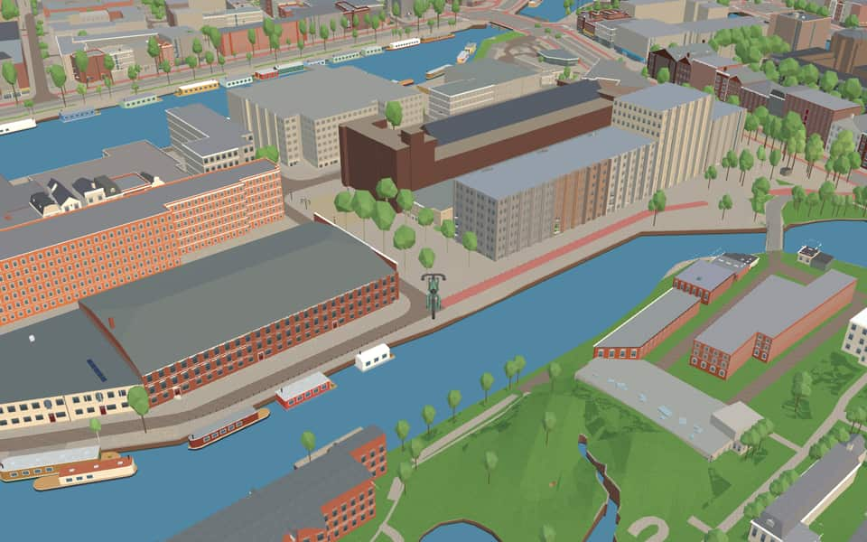
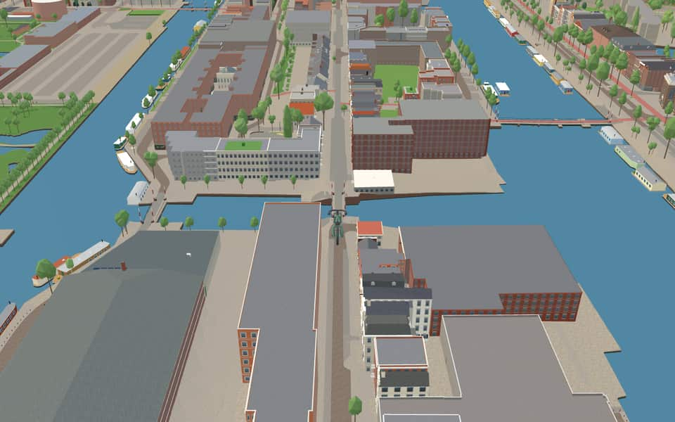

Neighbourhood · Amsterdam
Kadijken
The Kadijken, also known as Kadijkseiland or Kadijkenbuurt, is a neighbourhood to the north of Artis zoo in the centre of Amsterdam. The name Kadijken is the plural form of Kadijk and refers to the two main streets that traverse the neighbourhood, Hoogte Kadijk ("Upper Kadijk") and Laagte Kadijk ("Lower Kadijk"). en.wikipedia.org


In the game
Frames from a ride through Kadijken.




6 more photos of Kadijken

.jpg){kind=link}


.JPG){kind=link}


.jpg){kind=link}
Built here
Buildings modelled one by one for the ride.
Entrepotdok 13-37 / Binnenkadijk / Laagte Kadijk, Amsterdam
The Entrepotdok warehouses, converted to housing in the 1980s
Hoogte Kadijk 400, Amsterdam-Centrum
1903 brick industrial hall with giant arched windows and a small arched clerestory row, and a five-storey brick office wing with a stepped entrance
Did you know
Trivia the ride can show you here.
- Its 96 warehouses, stretching 800 metres, formed one of the largest warehouse complexes in Europe. Wikipedia
- The Entrepotdok warehouses, built between 1708 and 1829, were squatted in the 1990s and are now apartments. Wikipedia
- The Entrepotdok (Warehouse Dock) was formerly called the Nieuwe Rapenburgergracht. Wikipedia
- A ‘kadijk’ is the outer, lower of two dikes; here it held back the IJ. Wikipedia
- Armand SunierbrugOriginal bridges vanished during the 1932-1933 construction of a new cable-stayed bridge. nl.wikipedia.org
- Armand SunierbrugAdministrators once listed it as P-83 because it was not under municipal control. nl.wikipedia.org
- EntrepotdokConstruction of these warehouses spanned from 1708 until 1829. en.wikipedia.org
- EntrepotdokSquatters occupied the complex during the 1990s before conversion to apartments. en.wikipedia.org
- EntrepotdoksluisThe municipality selected an iron and steel drawbridge design around the year 1902. en.wikipedia.org
- Hoogte KadijkConstruction required 16 cubic meters of granite delivered in September 1902 for the new bridge. en.wikipedia.org
- Hoogte KadijkDesigner Arend de Graaf created this bridge as part of his first generation of drawbridges. en.wikipedia.org
- Hoogte KadijkElectric power controls were installed in 1911 by the NB Haarlemsche Machinefabriek. en.wikipedia.org
- KattenburgerbrugA symmetrical swing bridge replaced the earlier lifting mechanism in 1876. nl.wikipedia.org
- KattenburgerbrugThe waterway beneath marks the boundary between the Oosterdok and Nieuwe Vaart. nl.wikipedia.org
20 more facts
- KattenburgerbrugDirectly north stands the Maritime Museum while the Zeemanshuis sits just south. nl.wikipedia.org
- PelikaanbrugA staff member of the Consultative Body of the Eastern Islands suggested naming this bridge Pelikaanbrug. nl.wikipedia.org
- PelikaanbrugThe namesake warehouse was designed by architect Jan van Looy in 1902. nl.wikipedia.org
- Nieuwe HerengrachtOriginal stone arch bridges were swapped for movable ones to accommodate the growing shipping industry. en.wikipedia.org
- Nieuwe HerengrachtA cycle tunnel on the south bank dives beneath Weesperstraat to connect the Amstel with the Plantage area. en.wikipedia.org
- Nieuwe VaartResidents could isolate the island by lifting the Kattenburger bridge during the 1787 Bijltjesoproer riot. en.wikipedia.org
- Nieuwe VaartIn 1917, stone-throwing women followed a potato barge through the canal before police fired into the air. en.wikipedia.org
- Nieuwe VaartThe canal was dug in 1649 to fix silting problems caused by the island crossing much of the IJ. en.wikipedia.org
- Nieuwe VaartA houseboat association formed in 2011 after city plans threatened to remove most berths from the western section. en.wikipedia.org
- ScharrebiersluisElectricity from a tram line allowed the bridge to operate automatically starting in 1913. nl.wikipedia.org
- ScharrebiersluisA major renovation in 1986 finally fixed a long-standing defect while preserving original features. nl.wikipedia.org
- ScharrebiersluisOriginal iron fencing was kept during renovations while new red-white barricades were hidden away. nl.wikipedia.org
- SchippersgrachtDrinking water installation began here in April 1854. en.wikipedia.org
- SchippersgrachtTram line 2 ended at this canal around 1906 before being cut short. en.wikipedia.org
- SchippersgrachtArchitect Herman Hendrik Baanders designed number 5 in 1897. en.wikipedia.org
- SchippersgrachtMonumental buildings from the seventeenth century stand at numbers 14 and 15. en.wikipedia.org
- Prins HendrikkadeMost original buildings vanished during the Kattenburg redevelopment between 1963 and 1976. nl.wikipedia.org
- Prins HendrikkadeThe northern facade looks old but was actually constructed in 1970 as a historical reconstruction. nl.wikipedia.org
- Prins HendrikkadeHouse numbers skip wildly, restarting at 27 and again at 38 after major omissions. nl.wikipedia.org
- Prins HendrikkadeThe 17th-century Zeemagazijn building has housed the National Maritime Museum since 1973. nl.wikipedia.org
Names on the map
Where the canal, bridge and street names come from.
Canals and water
- EntrepotdokNamed after its function. The dock was built in 1827; imported goods had to be stored here until the import duties were paid (a bonded warehouse, entrepot). The warehouses have lost their function as an entrepot, and in part of them the upper floors have now been converted into homes (Binnenkadijk).
- EntrepotdoksluisNamed after its function. The dock was built in 1827; imported goods had to be stored here until the import duties were paid (a bonded warehouse, entrepot). The warehouses have lost their function as an entrepot, and in part of them the upper floors have now been converted into homes (Binnenkadijk).
- Nieuwe HerengrachtAfter the Heren Regeerders (the lords who governed the city; in the old days the city was not administered but ruled). The canal already existed as a ditch when in 1612 it was widened into today's canal, the first of the three main canals. The stretch beyond the Leidsegracht belongs to the expansion of 1658, as does the Nieuwe Herengracht.
- Nieuwe VaartNamed after the Nieuwe Vaart, dug around 1650 to link the IJ and the Oosterdok by the shortest possible route with the mouth of the IJ at Zeeburg.
- ScharrebiersluisScharrebier was the traditional drink of ordinary workmen. This 'thin' beer used to be sold on this drawbridge, because many working people were often gathered there.
- SchippersgrachtIn this neighbourhood, on the harbour side, skippers (schippers) and seamen made up most of the population, which gave the canal and the street their names.
Bridges
- Armand SunierbrugArmand Louis Jean Sunier (Rotterdam, 17 December 1886 – Baarn, 13 May 1974) was a Dutch biologist and the third director of the Natura Artis Magistra zoo. Sunier prevented the deportation of staff and animals to Germany and turned a blind eye to people hiding in the zoo. He was also one of the key figures in the breeding programme set up to save the wisent (European bison) from extinction. In addition, he was a member of the International Union of Directors of Zoological Gardens for many years and briefly served as its president.Bridge 327: a movable steel bridge.
- EntrepotdoksluisBridge 80: a movable steel bridge.
- Hoogte KadijkBridge 80: a movable steel bridge.
- KattenburgerbrugOne of the three eastern islands, with Wittenburg and Oostenburg. It was already called Kattenburg before it was diked and built on in the second half of the seventeenth century. No explanation for the name has been found so far. There was a house called 'de Cat', but that name is only recorded in the eighteenth century. After many buildings had been demolished during the occupation, the rest were demolished in 1965-1968. Rebuilding then began on a new street plan. The Kattenburgerplein is the only thing that still recalls the old buildings.Bridge 274: a movable steel bridge.
- PelikaanbrugAfter the nearby warehouse d'Peliekaan (the pelican) at Hoogte Kadijk 51.Bridge 277: a movable steel bridge.
1 other bridge without a recorded story
Entrepotdok
Streets
- BinnenkadijkWhen a great deal of land had built up through silting outside the old sea dike (St. Antoniesdijk), a summer dike, or quay dike (kadijk), was built. It was originally called the new sea dike, but that name later fell out of use. When this new dike was raised further, people spoke of the Laagte (low part) and the Hoogte (high part) of the Kadijk. Until 1943 the Tussen Kadijken was called Korte Kerkstraat. This is because it lies in line with the Plantage Kerklaan, although it has never been connected to it.
- Buiten KadijkenWhen a great deal of land had built up through silting outside the old sea dike (St. Antoniesdijk), a summer dike, or quay dike (kadijk), was built. It was originally called the new sea dike, but that name later fell out of use. When this new dike was raised further, people spoke of the Laagte (low part) and the Hoogte (high part) of the Kadijk. Until 1943 the Tussen Kadijken was called Korte Kerkstraat. This is because it lies in line with the Plantage Kerklaan, although it has never been connected to it.
- DageraadsbrugThis fixed bridge is named after the former shipyard 'De Dageraad' (the dawn) nearby.
- EntrepotdokNamed after its function. The dock was built in 1827; imported goods had to be stored here until the import duties were paid (a bonded warehouse, entrepot). The warehouses have lost their function as an entrepot, and in part of them the upper floors have now been converted into homes (Binnenkadijk).
- GeschutswerfGeschut (ordnance) is the collective name for cannon and heavy machine guns. The street lies where the Ordnance Yard of the Admiralty of Amsterdam was; guns were made here in the eighteenth century.
- Hoogte KadijkWhen a great deal of land had built up through silting outside the old sea dike (St. Antoniesdijk), a summer dike, or quay dike (kadijk), was built. It was originally called the new sea dike, but that name later fell out of use. When this new dike was raised further, people spoke of the Laagte (low part) and the Hoogte (high part) of the Kadijk. Until 1943 the Tussen Kadijken was called Korte Kerkstraat. This is because it lies in line with the Plantage Kerklaan, although it has never been connected to it.
- KadijkspleinWhen a great deal of land had built up through silting outside the old sea dike (St. Antoniesdijk), a summer dike, or quay dike (kadijk), was built. It was originally called the new sea dike, but that name later fell out of use. When this new dike was raised further, people spoke of the Laagte (low part) and the Hoogte (high part) of the Kadijk. Until 1943 the Tussen Kadijken was called Korte Kerkstraat. This is because it lies in line with the Plantage Kerklaan, although it has never been connected to it.
- KruithuisstraatA powder house (kruithuis) was built on this site in the seventeenth century. After some decades of use it was pulled down because the city's buildings were closing in on it.
- Laagte KadijkWhen a great deal of land had built up through silting outside the old sea dike (St. Antoniesdijk), a summer dike, or quay dike (kadijk), was built. It was originally called the new sea dike, but that name later fell out of use. When this new dike was raised further, people spoke of the Laagte (low part) and the Hoogte (high part) of the Kadijk. Until 1943 the Tussen Kadijken was called Korte Kerkstraat. This is because it lies in line with the Plantage Kerklaan, although it has never been connected to it.
- MatrozenhofRefers to the nearby shipping training institute (matrozen = sailors).
- NieuwevaartAfter the Nieuwe Vaart, dug around 1650 to link the IJ and the Oosterdok by the shortest possible route with the mouth of the IJ at Zeeburg.
- NijlpaardenbrugRefers to the hippopotamuses (nijlpaarden) in Artis.
6 more streets with a story
- OverhaalsgangOriginally an alley (waaigat) off the Hoogte Kadijk, which in the eighteenth and nineteenth centuries gave access to the ferry (overhaal) across the Nieuwe Vaart, abolished around 1877 when a railway was built along the Wittenburgergracht. There is now a fixed crossing where the old ferry was.
- PelikaanbrugAfter the nearby warehouse d'Peliekaan (the pelican) at Hoogte Kadijk 51.
- Prins HendrikkadeThe youngest son of King William II, Prince Willem Frederik Hendrik (1820-1879), who took a keen interest in trade and shipping. His bust, made in 1885 by Professor F. Stracke, stands opposite the Scheepvaarthuis. With the naming in 1879 a number of vivid names disappeared, and with them a piece of the city's memory.
- SarphatistraatSamuel Sarphati (1813-1866), Amsterdam doctor and pharmacist with many connections in banking circles, who did much for the city. He drew up plans for extending the city around the Frederiksplein and beyond the Singelgracht, for which he founded the Nederlandsche Bouwmaatschappij in 1864. The societies and buildings that came about through him include the Society for Agriculture (1848), the Society for Industry (1852) with the Paleis voor Volksvlijt it built (1864), the School of Commerce, the National Mortgage Bank and the Amstel Hotel (1866). Before the Sarphatipark was named, the streets around it were parts of the Ceintuurbaan, Jan Steenstraat, Van der Helststraat and Sweelinckstraat.
- ScharrebiersluisScharrebier was the traditional drink of ordinary workmen. This 'thin' beer used to be sold on this drawbridge, because many working people were often gathered there.
- Tussen KadijkenWhen a great deal of land had built up through silting outside the old sea dike (St. Antoniesdijk), a summer dike, or quay dike (kadijk), was built. It was originally called the new sea dike, but that name later fell out of use. When this new dike was raised further, people spoke of the Laagte (low part) and the Hoogte (high part) of the Kadijk. Until 1943 the Tussen Kadijken was called Korte Kerkstraat. This is because it lies in line with the Plantage Kerklaan, although it has never been connected to it.